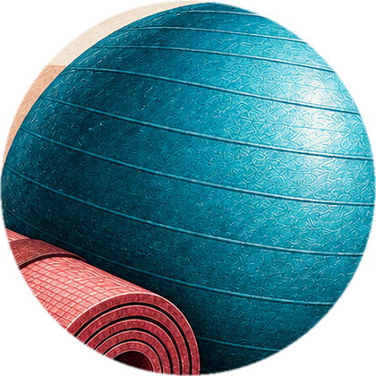
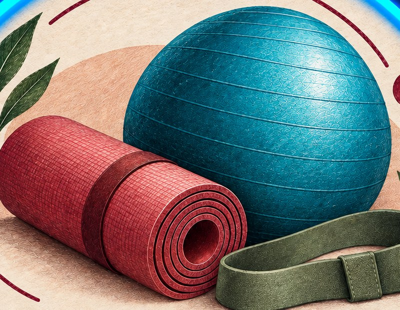
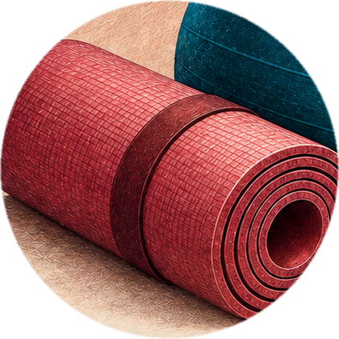
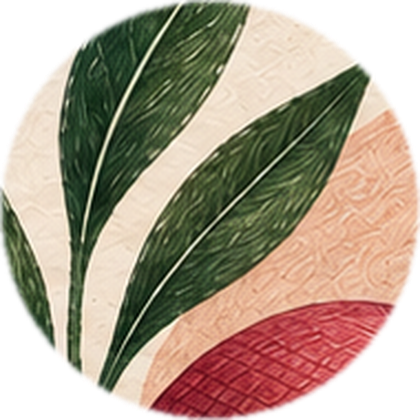
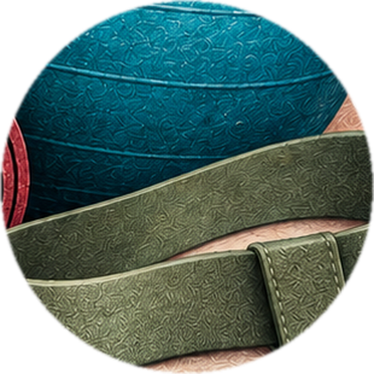

Беременность
Подготовка к беременности, мягкие тренировки во время беременности и восстановление после родов.
Метод Анны · женское здоровье
Онлайн-тренировки для сестёр любого возраста: осанка и спина, тазовое дно, подготовка к беременности и восстановление после родов. Сначала выравниваем ось тела, потом мягко укрепляем — без стресса.

Узнаёте себя?
С этим ко мне приходят чаще всего. Многое из этого я прошла сама — и знаю, что телу можно помочь.
Напишите, что беспокоит, — подберу формат
Написать АннеНаправления
Для женщин любого возраста — от молоденьких девочек до бабушек.

Подготовка к беременности, мягкие тренировки во время беременности и восстановление после родов.

Сколиоз, гиперлордоз, боли в шее, пояснице и лопатках, головные боли.

Мышцы тазового дна, облегчение во время хайда, подтекания, гормональный фон, желание к мужу.

Живот, который не уходит, дряблая кожа, целлюлит, отёки, лишний вес и энергия.
Подход
Начинаем с осанки и положения тела — это основа, без которой нагрузка не даёт результата.
Включаем глубокие мышцы и тазовое дно — без стресса и перегрузок.
Нагрузку повышаем постепенно, только когда тело к этому готово.
О тренере
«Я сама прошла многие проблемы, с которыми приходят женщины: головные боли, прибавка в весе больше 20 кг, недержание, диастаз, отсутствие энергии, выпирающий животик. Мне удалось избежать операции на плечо — когда квота уже была получена и дата операции назначена. Плечо больше не беспокоит. Поэтому могу помочь практически каждой».
Специалист по женскому здоровью, тренер
Форматы и стоимость
Закрытый канал с тренировками — занимаетесь дома в удобное время.
Живые тренировки в группе. Сейчас идут три женские группы и одна детская — для девочек от 7 до 15 лет.
Работа лично с вами — под ваш запрос и ваше тело.
Все программы длительные и регулярные — присоединиться можно в любой момент.
Обучение тренеров
Обучаю тренеров, в том числе без опыта. Это возможность получить халяльную профессию и вести тренировки, не выходя из дома.
Для меня это стало способом самой заниматься регулярно: когда есть ответственность за подопечных, хочешь не хочешь — пойдёшь на тренировку.
Узнать об обученииОтзывы
«После трёх недель занятий хочется отметить, что в теле в целом появилась лёгкость, больше сил. Стопы стали намного меньше заваливаться внутрь, начали работать нужные группы мышц, и у меня перестала болеть поясница на постоянной основе. Стало легче и свободнее дышать, благодаря чему почти полностью ушли головокружения.
Третья неделя стала для меня интересной, потому что я начала чувствовать связь со своим телом. Я благодарна Аллаху за то, что узнала об Анне, и могу спокойно довериться ей на время своей беременности и после. БаракаЛлаху фики за твой труд и твои знания!»
«Самочувствие хорошее, спину теперь не надо напрягать, чтобы выпрямиться, — неосознанно получается. Ещё не идеально, конечно, но намного лучше, чем было, альхамдулиЛлях. Тазобедренный сустав меньше хрустеть стал, да и в целом тело тоже — особенно изменения заметны во время намаза. Заметила, что стала больше дышать животом, а не грудной клеткой. И в целом в движениях больше лёгкости чувствуется».
Эти тренировки мне так полюбились, Аллахумма барик! Это то, что нужно девушке, — именно тазовое дно прокачивать. У меня самой сидячий образ жизни, я особо не двигаюсь — я делаю эти тренировки, и всё.
Мне ооочень понравилась тренировка! Поясница не заболела, тазобедренные суставы подвигались, ягодицы чуть не умерли, пресс включился и начал помогать мне жить эту жизнь. В восторге просто!
Тренировка отличная. Я обычно занимаюсь силовыми или кардио, но тут такое расслабление мышц. А это растяжение шеи — просто топ. В конце не хотелось даже вставать с этого упражнения. جزاك الله خيرا
Ассаляму алейкум! Лежу сейчас и чувствую, что ягодичные мышцы стали сильнее: я прям хорошо чувствую их силу. Визуально пока не могу сказать, но предполагаю, что и визуально они подтянулись.
Упражнение на плечи прям вообще — то, что мой организм просил, альхамдулиллях. Прогрелась и наконец выдохнула: расслабиться сегодня не могла, а сейчас прям выдохнула.
Мне вас посоветовала сестра по вере. Вашу методику и подачу она мне рассказала, хвалила вас. Аллахумма барик!
Как начать
Пишете в Telegram, что беспокоит
Первое — бесплатно
Запись, Zoom или индивидуально
Тренировки с поддержкой
Лёгкость, силы и тело без боли
Вопросы
Абонемент на месяц — 3 000 ₽. Есть индивидуальный формат работы — стоимость обсуждаем лично. Первое пробное занятие — бесплатно.
Два формата: канал с тренировками в записи — занимаетесь в удобное время, и тренировки по расписанию в Zoom. Сейчас идут три женские группы и одна детская — для девочек от 7 до 15 лет.
Есть длинный список рекомендованного, но я всегда предлагаю замены из того, что есть под рукой. Например, вместо ролла подойдёт банное полотенце, скрученное в ролл.
Да. Все программы длительные и регулярные, поэтому присоединиться можно в любой момент. Есть сёстры, которые занимаются больше года — это помогает поддерживать себя в форме.
Ко мне обращаются и молоденькие девочки, и бабушки — есть опыт работы с каждой. Нагрузку даю по вашему телу: сначала выравниваем ось, потом мягко укрепляем, силовые — только когда тело готово.
Напишите мне в Telegram — кнопки на этой странице открывают чат с уже готовым сообщением. Начнём с бесплатного пробного занятия.
Напишите в Telegram — кнопка откроет чат с готовым сообщением.